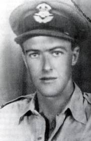
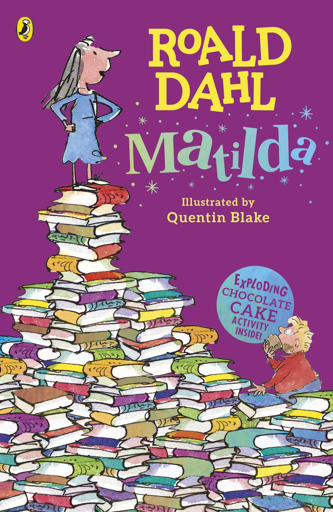
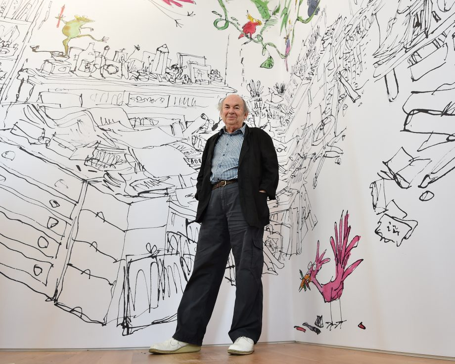

A spy, ace fighter pilot, chocolate historian and a medical inventor!
Roald Dahl, (pronunced 'Rool Dahl') is mostly know for his enchanting stories, but there is much more to his life than just that! he worked as a fighter pilot for the RAF in ww2, was a spy for england and made an invention that saved many children! he was born in Wales to Sophie and Harald Dahl. Roald had 4 sisters.
Roald studied at The Cathedral School, Llandaff. Roald had a few friends, and they all loved sweets, and lucky for them on the way to school there was a wonderful sweet shop stack with sweets, but the problem was the shop was run by a mean old lady, she grabbed their precious sweets with her bare hands! roald and his friends called her the witch. One day Roald found a dead mouse, he thought of a dangrous idea, Roald who loved to play pranks had just thought of anather one, Roald wanted to put the dead mouse in the ever hated witches gobstopper jar! so one day while his friends distracted her, he slipped the mouse and had a quick leave, the next day, a "Closed" sign was hanging on the witches shop! Roald thought she had died due to fright, but when he reached school, he found the witch there complaing to the principal! Roald and his friends got punished...
Next Roald went to Repton where things got worse, but he had many more adventures!

Roald Dahl when he worked for RAF
Roald, after school wanted to go to an exciting pace, like Africa! so he joined shell hoping he would get a chance to go abroad, and luckily for him, in the next few days his boss called him saying he could go to egypt! but Roald rejected straight away, "to dusty", he said to his confused boss. But in a few more weeks he got a chance to visit Africa! he met lions and had an amazing trip, but things were not going so amazing in britan, Hitler had just declred war on Poland and Britan was looking for young people for the force, and roald was just the man...
Roald Wrote many books! he started writing adults books but when he was out of ideas he published a story he had written for his kids, James and the giant Peach! he had not expected the book to blow up but after James, Roald wrote childrens books.

Roald had many illustrators draw his books, Quentin Blake, was Roalds favourite, his style completely matched Roalds storys and they became close friends.

Quentin Blake
Roald in total published 48 books, (not including screenplays) and 20 enchanting children books!
Roald had 5 sisters. his father harald dahl actually had disarmed himself when he was young! he fell of the roof and the drunk doctor mistook the injury as a dislocated shoulder. After harald had become older, he wanted to make some money, so he went off to wales where he started his shop and soon started a tidy profit. harald also married in wales, but haralds wife died, so harald when to norway and then he married Sophie Dahl who then gave birth to Roald!

Harald Dahl